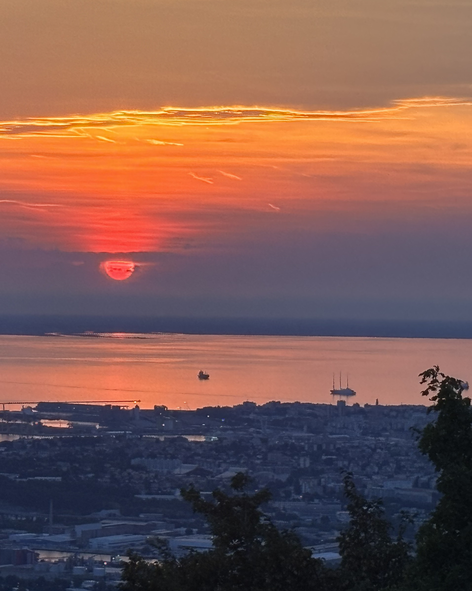

Schloss Miramare
1. Stopp · das Schloss am Meer
Ein weißes Schloss auf einem Felsen über der Adria, mit grünem Park am Meer.
Mehr erfahren →
Ein unvergesslicher Tag: eine Minivan-Tour in der Kleingruppe, maximal 8 Gäste, zu einem Schloss am Meer, einem Fischerdorf und den Hügeln des Karsts.
Platz reservierenTagesablauf ansehenTriest schreit nicht (die Bora manchmal schon). Es wartet am Ende Italiens, wo der Karst in die Adria abfällt, und belohnt alle, die langsamer werden: ein Schloss, weiß vor dem Wasser, ein gemütliches Fischerdorf, das Sie in den Arm nimmt, Hügel, die über dem Golf schweben.
Wir fahren Sie gemütlich in der Kleingruppe hin, damit Sie einfach nur schauen können. Überlassen Sie uns Auto, Karte und Eile.

Triest ist ein Panorama-Juwel. Von oben entfaltet sich die ganze Stadt samt Golf auf einmal: Dächer, Schiffe, die wie langsame Gedanken dahintreiben, die Adria im Abendlicht.
Unterwegs halten wir an mehreren Aussichtspunkten, ausgewählt nach dem Licht, um den Golf von den besten Plätzen der Stadt aus zu sehen.
Unser Ziel sind die besten Panoramen. Wir treffen uns 8 Stunden vor Sonnenuntergang, damit der Tag im schönsten Licht endet.
Ein weißes Schloss auf einem Felsen über der Adria, mit grünem Park am Meer.
Mehr erfahren →
Ein Küstenstädtchen im venezianischen Stil auf der anderen Seite der Bucht, historisch und aussichtsreich.
Mehr erfahren →
Ein Hügel hoch über dem Golf, mit weiter Aussicht zum Sonnenuntergang.
Mehr erfahren →


Inklusive: Transport, Guide, Snack, alle Stopps. Nicht inklusive: Mittagessen und optionale Eintrittskarten.
Ja. Der letzte Stopp an der Burg Socerb ist zum Sonnenuntergang geplant. Bei Regen fahren wir, sofern es sicher ist. Wolken können die Sonne verdecken. Der Blick auf den Golf lohnt sich auch bei Regen. Die genaue Uhrzeit finden Sie auf der Startseite nach der Datumsauswahl.
Minivan-Transport, ein triester Guide, ein Lokaler-Snack und alle Stopps. Mittagessen und optionale Eintrittskarten (zum Beispiel für das Innere von Schloss Miramare) sind nicht inklusive.
Ihr Guide unterhält sich unterwegs gerne mit Ihnen. Seine Muttersprache ist Italienisch. Er spricht fließend Englisch und kann sich auch in einfachen Gesprächen auf Deutsch verständigen.
Senden Sie eine Anfrage über die Kontaktseite oder per WhatsApp. Sie erhalten einen sicheren Zahlungslink, und Ihre Plätze sind nach der Zahlung bestätigt.
Ja, mit voller Erstattung bis 48 Stunden vor der Tour. Sagen wir wegen Wetter oder Sicherheit ab, erhalten Sie eine Erstattung oder einen kostenlosen neuen Termin.
Burg Socerb liegt direkt hinter der Grenze in Slowenien. Bitte bringen Sie Personalausweis oder Reisepass mit.
Auf der Piazza Unità d'Italia in Triest. Wir bringen Sie an denselben Ort zurück.
Nur 8 Gäste pro Abfahrt, €99 pro Person. Sagen Sie uns, wann Sie kommen möchten, und wir organisieren alles per WhatsApp oder E-Mail.
Tour anfragen